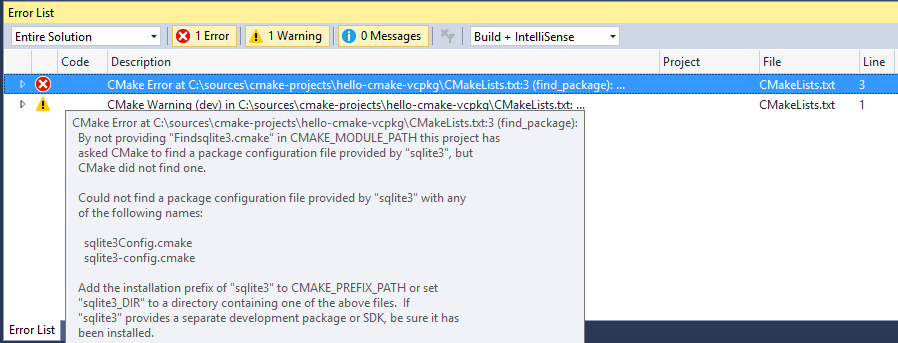

⏱ Updated on October 5, 2017 with the latest functionality included with Visual Studio 2017 15.4
Visual Studio 2017 introduces built-in support for handling CMake projects. This makes it a lot simpler to develop C++ projects built with CMake without the need to generate VS projects and solutions from the command line. This post gives you an overview of the CMake support, how to easily get started and stay productive in Visual Studio.
Getting started with CMake in Visual Studio
To start, create a simple CMakeLists.txt file in the same folder with
your cpp file as in the example below. Then, open the folder in Visual
Studio (via File > Open > Folder… or devenv.exe <foldername>). Alternatively, open a folder inside VS containing one of your existing CMake projects.
Hello.cpp
1 2 3 4 5 6 | #include <iostream> int main(int argc, char* argv[]){ std::cout << "Hello" << std::endl;} |
CMakeLists.txt
1 2 3 | project (hello-cmake) add_executable(hello-cmake hello.cpp) |
As soon as you start, VS will load your CMake project and you can get started coding. Here’s an overview of the different pieces of the Visual Studio 2017 UI when doing C++ development with CMake (click the picture to view larger):
{kind=link}
What is CMake
CMake is a cross-platform open-source tool for defining build processes that run across multiple platforms by abstracting away native build environments and compilers. CMake interprets a CMakeLists.txt script the user authors and generates a build plan in a build environment of choice (e.g. Visual studio projects, make scripts, Xcode projects, etc.).
CMake has seen a tremendous uptick in the C++ community in recent years across all platforms. In our developer surveys, we have seen CMake constantly grow in usage year over year since 2012, surpassing in 2015 the make family (make/gmake/nmake) in terms of adoption.
Visual Studio support for CMake
Two initiatives that started taking shape in early 2016 marked a turning point in our planning. By this time, we already knew we wanted to tackle this problem space but we weren’t sure yet how to fix many of the challenges we heard from you.
- The first initiative, in the CMake community, was the CMake-server prototype developed initially by Stephen Kelly to improve the tooling story for CMake. This started some interesting conversation in the CMake community as well as internally in our team and it was dubbed the missing link between CMake and the IDE.
- The second one, a Visual Studio initiative (“Open Folder”) designed to enable the developer inner-loop (edit-build-debug experience) without the existing VS solution & C++ project system infrastructure, allowing non-MSBuild C++ codebases to be loaded in Visual Studio in a folder-based experience. This is now part of Visual Studio 2017 “Open Folder” C++ capability.
Visual Studio 2017 takes advantage of both functionalities to provide an end-to-end C++ development experience for CMake projects that includes:
- Reading C++ code
- Editing C++ code
- Editing CMake projects
- Configuring CMake
- Building CMake projects
- Debugging C++ code build with CMake
- Target Linux with CMake
- Opening multiple CMake projects at once
Reading C++ code
As soon as you open a folder containing a CMake project, Solution Explorer will display the files in that folder and you can open any one of them in the editor.
In the background, VS will start indexing the C++ sources in your folder. It will also run CMake.exe to collect more information about your CMake project (CMake cache will be generated in the process). CMake is invoked with a specific set of switches that are defined as part of a default CMake configuration that VS creates under the name “x86-Debug” – if this configuration is insufficient for CMake to successfully create its cache, you can further configure it: how to configure CMake is explained later in the post.
Visual Studio gives you access to all its capabilities for reading and browsing C++ code that is part of the CMake project (e.g. Find all references, Go to…, Peek definition, Semantic colorization and highlighting, Class View, Call hierarchy, etc.)
{kind=link}
Editing C++ code
Visual Studio will rely on the folder structure and will monitor changes in the editor and on disk as needed to have C++ IntelliSense updating and assisting you with the latest information from your C++ sources.
{kind=link}
When editing your C++ code, you can also use all of the refactoring features that Visual Studio supports for C++ e.g. Rename symbol, extract function, move definition location, change signature, convert to raw string literals, etc.

Editing CMake projects
As you make changes to your sources, or even create, rename or remove source files from your CMake projects, you don’t have to worry about manually rerunning CMake to regenerate the VS solution or projects like in previous VS releases. Visual Studio will automatically run CMake configure step and give you the most up-to-date C++ IntelliSense, language services, build and debug support.
{kind=link}
In case of a configuration error or warning, you can review these in the Error List or Output Window. Double-clicking on an error will navigate to the offending line in CMakeLists.txt in the editor.

As soon as you address any potential issues and save the file, the configuration step will automatically rerun again. If you need more information about the state of the CMake cache to diagnose a problem, there are several cache operations available either in the CMake main menu or the CMakeLists.txt context menu in Solution Explorer:
- “View Cache” will open the CMakeCache.txt file from the build root folder in the editor. You can technically edit the file and save, but we recommend following the steps in the Configure CMake section below instead to configure CMake (changes to CMakeCache.txt are wiped out if you clean the cache)
- “Open Cache Folder” will open an Explorer window to the build root folder
- “Clean Cache” will delete the build root folder allowing for the next time the CMake configure runs to run clean
- “Generate Cache” forces the generate step to rerun even if VS considers the environment up-to-date (in case you’re operating changes that are not detected by VS).
Note: If, at a given time, you don’t expect the CMake generation to succeed, you can also cancel the operation either from the yellow info-bar in the editors or by right-clicking on the root CMakeLists.txt in Solution Explorer and select “Cancel Cache Generation“. You can restart the CMake generation step later by right clicking on the CMakeLists.txt and select “Generate Cache“.
Also, when the configure step completes, the Startup Item dropdown will contain the updated list of CMake targets.
{kind=link}
Configuring CMake
By default, Visual Studio provides four default CMake configurations (“x86-Debug”, “x86-Release”, “x64-Debug” and “x64-Release”) that define the way CMake.exe is invoked to create the CMake cache for a given CMake project (CMake cache is needed for editing and building the project).
You can switch between the available CMake configurations from the C++ Configuration dropdown in the General Tab.
{kind=link}
When your CMake project requires additional settings for the CMake cache to create correctly, you can customize a CMake configuration or create new ones by creating/editing a CMakeSettings.json file in the same folder with the root CMakeLists.txt.
You can create the CMakeSettings.json file by selecting CMake > Change CMake Settings > path-to-CMakeLists (configuration-name) from the main menu or by right clicking on the CMakeLists.txt file in Solution Explorer and select “Change CMake Settings“.
{kind=link}
Note: JSON IntelliSense is available to assist with editing the CMakeSettings.json file.
{kind=link}
If you already have CMake.exe working on the command line, creating a new CMake configuration in the CMakeSettings.json should be trivial:
CMakeSettings.json example
1 2 3 4 5 6 7 8 9 10 11 12 13 14 15 16 | { "configurations": [ { "name": "my-config", "generator": "Visual Studio 15 2017", "buildRoot": "${env.LOCALAPPDATA}\\CMakeBuild\\${workspaceHash}\\build\\${name}", "cmakeCommandArgs": "", "variables": [ { "name": "VARIABLE", "value": "value" } ] } ]} |
- name: is the configuration name that will show up in the C++ configuration dropdown. This property value can also be used as a macro ${name} to specify other property values e.g. see “buildRoot” definition
- generator: maps to -G switch and
specifies the generator to be used. This property can also be used as a
macro ${generator} to help specify other property values. VS currently
supports the following CMake generators:
- “Ninja”
- “Visual Studio 14 2015”
- “Visual Studio 14 2015 ARM”
- “Visual Studio 14 2015 Win64”
- “Visual Studio 15 2017”
- “Visual Studio 15 2017 ARM”
- “Visual Studio 15 2017 Win64”
- buildRoot: maps to -DCMAKE_BINARY_DIR switch and specifies where the CMake cache will be created. If the folder does not exist, it will be created
- variables: contains a name+value pair of CMake variables that will get passed as -Dname=value to CMake. If your CMake project build instructions specify adding any variables directly to the CMake cache file, it is recommended that you add them here instead.
- cmakeCommandArgs: specifies any additional switches you want to pass to CMake.exe
- configurationType: defines the build configuration type for the selected generator. Currently supported values are “Debug”, “MinSizeRel”, “Release” and “RelWithDebInfo”
CMakeSettings.json also supports consuming environment variables in any of the properties mentioned above. The syntax to use is ${env.FOO} to expand the environment variable %FOO%.
You also have access to built-in macros inside this file:
- ${workspaceRoot} – provides the full path to the workspace folder
- ${workspaceHash} – hash of workspace location; useful for creating a unique identifier for the current workspace (e.g. to use in folder paths)
- ${projectFile} – the full path for the root CMakeLists.txt
- ${projectDir} – the full path to the folder of the root CMakeLists.txt file
- ${thisFile} – the full path to the CMakeSettings.json file
- ${name} – the name of the configuration
- ${generator} – the name of the CMake generator used in this configuration
As significant changes are made to the CMakeSettings.json or to CMakeLists.txt files, VS will automatically rerun the CMake configure step. If the configure step finishes successfully (no errors), the information collected will be available in C++ IntelliSense and language services as well as build and debug operations.
Building CMake projects
You can build a CMake project in one of 2 ways:
- Right click on the CMakeLists.txt and select Build from the context menu
- From the main menu, select Build > Build Solution (F7 or Ctrl+Shift+B) (for this to work, make sure that a CMake target is already selected in the Startup Item dropdown in the General toolbar)
When a VS generator is selected for the active configuration, MSBuild.exe is invoked with “-m -v:minimal” arguments. To customize the build, inside the CMakeSettings.json file, you can specify additional command line arguments to be passed to the build system via the “buildCommandArgs” property e.g.
1 | "buildCommandArgs": "-m:8 -v:minimal -p:PreferredToolArchitecture=x64" |
As you would expect, the results of the build are available in the Output window and any errors and warnings are available for searching, filtering and grouping in the Error List window.

You also can be specific about which CMake target you want to build (if you want to minimize the code being built) or whether you want to select a full build.
{kind=link}
Debugging C++ binaries built with CMake
All executable CMake targets are populated in the Startup Item dropdown in the General toolbar. To start a debugging session, just select one and launch the debugger.
{kind=link}
You can also customize the debugger settings for any executable CMake target in your project. When selecting “Debug and Launch Settings” context menu in Solution Explorer and select a specific CMake target in the sub-menu, a file called launch.vs.json is created. This file is pre-populated with information about the CMake target you have selected and allows you to specify additional parameters like program arguments or debugger type.
{kind=link}
launch.vs.json example
1 2 3 4 5 6 7 8 9 10 11 12 13 | { "version": "0.2.1", "defaults": {}, "configurations": [ { "type": "default", "project": "CMakeLists.txt", "projectTarget": "tests\\hellotest", "name": "tests\\hellotest with args", "args": ["argument after argument"] } ]} |
As soon as you save the launch.vs.json file, an entry is created in the Startup Item dropdown with the new name. By editing the launch.vs.json file, you can create as many debug configurations as you like for any number of CMake targets.
{kind=link}
Target Linux with CMake
Visual Studio now supports targeting Linux directly with CMake:
{kind=link}
This feature allows you to open your Linux projects without modification, edit on Windows with full IntelliSense, and build and debug on a remote Linux target. Additionally, Visual Studio handles the connection to the remote target for you, so you don’t need to worry about setting up SSH tunnels. This should make cross-platform development a breeze, because you can switch between targeting Windows and Linux by switching configurations in the dropdown. Check out the link above if you want to learn more.
Opening multiple CMake projects
Note that you don’t have to limit your experience to a single CMake project – you can open folders containing an unlimited number of CMake projects. Visual Studio will detect all the “root” CMakeLists.txt files in your workspace and configure them appropriately. CMake operations (configure, build, debug) as well as C++ IntelliSense and browsing are available to all CMake projects in your workspace.
{kind=link}
When more than one CMake project uses the same CMake configuration name, all of them get configured and built (each in their own independent build root folder) when that particular configuration is selected. You also are able to debug the targets from all of the CMake projects that participate in that CMake configuration.
{kind=link}
In case you prefer project isolation, you can still create CMake configurations that are unique to a specific CMakeLists.txt file (via the CMakeSettings.json file). In that case, when the particular configuration is selected, only that CMake project will be available for building and debugging and CMake-based C++ IntelliSense will only be available to its source files.
What’s next
Download Visual Studio 2017 today and try it with your favorite CMake project – no need to generate a SLN file on the command line, just point VS to the folder containing the CMakeLists.txt and let the IDE do the rest.
Please share your feedback – we’re interested in learning from you whether this experience meets your needs and how we can further improve it.
Do you guys have a version of CMake that works with Visual Studio 15 Preview 5.
I tried the 3.7.0-rc1 from the CMake site but I get the error
— The C compiler identification is unknown
— The CXX compiler identification is unknown
When I run
cmake -G “Visual Studio 15 Win64”
I suspect this is because they have “experimental” support for Preview 4 and I
think you have moved stuff around in the install tree for Preview 5.
I know you have a CMake branch on GitHub and was wondering if I should try that?
CMake 3.7 already has support for VS’15’ generator but there are things that are still changing in VS setup and that makes it a moving target. https://gitlab.kitware.com/cmake/cmake/issues/16347
For now, VS has a separate fork of CMake 3.6 that has both a generator for VS’15’ projects as well as the CMake-server changes needed for the IDE integration. If you want to try it from the command line, you’ll need to make sure you run it directly from the folder it is installed in though (because it uses relative paths to find where VS and compilers are installed). The folder in Preview 5 is C:\Program Files (x86)\Microsoft Visual Studio\VS15Preview\Common7\IDE\CommonExtensions\Microsoft\CMake\CMake\bin\cmake.exe. But keep in mind that this version is experimental i.e. it’s not supported by Kitware or us.
David, the latest 15.2 release now includes CMake 3.7.2. To learn more: https://blogs.msdn.microsoft.com/vcblog/2017/04/17/cmake-support-in-visual-studio-whats-new-in-2017-15-2-update/
Nice, finally!
Hopefully this will make it easier to use compilers other than msvc like an arm-gcc cross compiler for embedded code.
So far I haven’t found a nice way to get that with CMake, only ugly workarounds like generating makefiles and a makefile project running gmake.
Considering you can talk to the CMake server to know about the project organization, have you considered allowing not using Visual Studio solutions but a Ninja project instead in the build folder?
Ninja parallelizes much better than MSBuild (no need to tune /M for MSBuild and /MP flag for the compiler, sometimes resulting in N^2 compilation processes).
Or possibly contributing a new generator for Visual Studio that generates projects with the file list but calling Ninja instead.
Thanks for the suggestions. We are thinking of ways to provide more flexibility in configuring CMake, including supporting multiple generators and/or toolchain files while still getting all the info the IDE needs through the CMake-server. That’s still work in progress. We don’t have plans of adding new generators to CMake just for the IDE integration though – that approach doesn’t scale.
Thanks and keep the feedback coming.
That sounds very promising! Ninja instead of MSBuild would be fantastic!
The server protocol is independent from the generator. You speak the protocol – it doesn’t matter what generator is used from the CMake point of view. Presumably the work that would need to be done is to teach VS to parse Ninja output for errors and things like that. If VS is using `cmake –build` to invoke the build, it’s already very independent of the generator.
+1 for Ninja
msbild is close to usefulness for my medium size project.
Otherwise, this new cmake integration is great and opens VS for much broader audience.
I would like to see Ninja support, but maybe fastbuild is interesting, too. Some is creating CMake support for fastbuild.
Wow, this is an interesting development, I could almost see myself using visual studio with this.
I wonder if VS in Wine could be compiling Linux cmake projects with this?
You don’t need Visual Studio on Linux. You can compile CMake projects via command line on Linux without an IDE.
mkdir build && cd build
cmake .. -DCMAKE_BUILD_TYPE=Debug -DCMAKE_INSTALL_PREFIX=/usr
make -j9
Really excited to see this! Is there any plan to integrate this support into VS Code as well? Also it looks like the tech preview doesn’t include a full CMake distribution, so some projects cannot be configured. For example it is missing the “Templates” directory, and (not sure why) CMake’s configure_file command doesn’t seem to be working.
Thank you for reporting this issue. We are aware of the missing files and this issue will be addressed in our next release.
Hello, I have a question,
does IntelliSense automatically use ‘include directiories’ from CMakeLists.txt or have to do it manually in CppProperties.json?
and does it ‘parse’ all CMakeLists.txt from specified directory’s structure? I mean, i have a project like this:
Main project
—CMakeLists.txt
—Subproject1
——CMakeLists.txt
——.hpp, .cpp files
—Subproject2
——CMakeLists.txt <– adds 'include directories' for Subproject1 files
——.hpp, .cpp files
will it also use 'include directories' from other CMakeLists ?
hope I made it clear :)
If the cpp and hpp files are specified as part of a CMake target in the Subproject2\CMakeLists.txt and this project is included via include_subdirectory(Subproject2), then you shouldn’t need to do anything else to get IntelliSense for these files.
If you’re using the RC build, there is a bug in RC that I am aware of that you will need to workaround by closing all editors and restarting VS to get IntelliSense back on track (already fixed for our upcoming release). Let me know if you don’t get it to work as I’d like our team to investigate this further.
Thanks for Your response,
it turned out that our big linux project had some problem with cmakes,
i don’t know details, but it has been fixed – at least works with QtCreator,
haven’t check for VS17 yet
Where is the source code for the version of CMake that is included with Visual Studio? I’m asking because it does not seem to include the “VCMDDAndroid” changes from here: https://github.com/Microsoft/CMake/tree/feature/VCMDDAndroid.
What’s the recommended way to generate Android project from CMake using Visual Studio 2017 RC?
Yes, the Android support is not in the VS2017 RC CMake binary we’re currently shipping. We will update the CMake binary to include the code from the VCMDDAndroid branch too in an upcoming release. Thanks for bringing this up and for trying the new VS CMake support.
When I launched a debugger, it did’t trigger my breakpoints. what should I add some option to CMakeLists.txt?
It is possible that you’re building a release binary without debug information? When you hover over the breakpoint, does it tell you more about why it isn’t hit? Can you check the Modules window and see whether the PDB information was loaded?
1) Anyone who has developed using CMake knows that at times you need to debug CMake. itself. What is integrated method for debugging CMake itself in VS? In CMake GUI there was message window and message(), which is certainly super awesome (read painful). Maybe there could be a bit of parsing of the message output to take developer right to offending CMakeLists.txt file and line.
2) When using CMake generated solution files VS on large projects VS tends to “run off into the forest” where builds cannot be canceled. There is of course my go to solution to this to terminate VS in task manager. Any thoughts on creating a “cancel build” button that well… cancels a build? (snarky…. yes… derived from experience… absolutely)
3) CMake allowed the generating of both VS projects and CMake generated projects to coexist in the same project. Does integrated solution provide for this.
4) Will new CMake / VS integration allow for CMake to modify VS environment. Currently I have to get CMake to configure a run_vs.bat file to set VS environment before calling/launching VS.
5) It’s really about time that VS has the concept of “a directory full of project files”… Maybe there will come a day when I will not have to use Eclipse along side VS simultaneously though I am not holding my breath.
1) message() works in VS as well, and it will be displayed in the Output Window > CMake pane.
2) canceling the build is supported. If VS hangs for you during cancellation, please collect a crash-dump for devenv.exe and open a issue on https://developercommunity.visualstudio.com so that we can investigate what’s going on. Thanks!
3) build and debug should work. You won’t get accurate IntelliSense for the files in the vcxproj files yet but that’s something that is in the pipeline for us. I am curious to learn more about your scenario. Do you mind reaching out to me at mluparu at microsoftdotcom or point me to your project (in case it’s OSS)?
4) That’s another scenario I’d like to understand better. Why isn’t configuring CMake variables sufficient and you need to set the environment as well?
5) keep giving us feedback and we’ll improve the “open folder” experience. Thanks for taking the time to provide it so far, keep it coming.
About number 4, if OP it talking about setting the Environment variable found here “Configuration Properties -> Debugging -> Environment” then I completely agree. There is no CMake variable for this as this seems to be a Visual Studio thing.
Hello,
I’ve downloaded Cmake from its website, moved it to the Program Files folder, added a directory to the Path variable in Environment Variables section.
Also, I downloaded Visual Studio 2015, ran it, added command prompt from External Tools Windows.
In Command Prompt, I’ve moved to the Cmake directory, ran cmake-gui.exe file.
And as a result, if I type cmake-gui or cmake –version in command prompt in any directory, I see the correct corresponding output.
However, I downloaded a software folder, when I select relative source and bin folders in the empty fields of Cmake GUI interface, I get an error:
CMake Error at CMakeLists.txt:35 (project):
No CMAKE_CXX_COMPILER could be found.
You can also see the details here: http://stackoverflow.com/questions/41317108/cant-run-a-software-via-cmake?noredirect=1#comment69859192_41317108
Why does “args”: [“argument after argument”] expand to three arguments instead of one? After all “args” is an array so intuitive thing would be one array item being one argument. Having string in the array that expands to multiple arguments is very confusing and counter-intuitive.
I cannot find a way to compile single files, I have to build the whole project if I just want to test one single file. In a normal VS project if you right click on a cpp file there is a `compile` option in the context menu. But in the new “Open Folder” projects I cannot compile single files because this option does not exist.
That feature would be nice in some scenarios for sure (editing headers for eg. and knowing that testing the changes could be done in a single source file and one does not need to blow up the console with building an entire target) it is moderately tricky to implement.
Because the Solution Explorer is not a 1-1 representation of the MSBuild files but the actual folder structure, it is not immediately evident which build command is needed to be invoked. The IDE would have to scan ALL the generated MSBuild files and check, where the given file contributes to a target (may be multiple targets) and invoke all compile commands with flags corresponding to each of the dependant targets. With a few hundred targets, this scan might take as long as loading all the projects in a CMake-less scenario, which can be very long.
Does (and if not, when will ;-) ) CMake in VS 2017 support Remote Debugging? Thx !
My own attempt to improve cmake kind of generation tools – this allows not only configuration syntax highlighting, but also configuration debugging, editing.
syncProj tool
https://docs.google.com/document/d/1C1YrbFUVpTBXajbtrC62aXru2om6dy5rClyknBj5zHU/edit
Hi guys,
I’ve tried this mode of VS2017 and it doesn’t work for me. Our project has hundreds of CMakeLists.txt files and the topmost CMakeLists.txt doesn’t have any target defined. Seems this is the problem why VS doesn’t process it.
I dp “open folder” in VS2017 on folder which contains our topmost CMakeLists.txt and nothing happened.
If I do the same on folder which contains CMakeLists.txt with any target defined VS2017 starts cmake.
Is there any way to solve this problem?
Boris, can you send us a feedback comment with your project included? Or an example project that repros the situation?
I can think of two things that might cause your situation
– Root CmakeLists.txt doesn’t include subdirectories for some reason. Perhaps they are all predicated on some variable and that variable isn’t configured.
– We crashed while trying to run CMake.
Either way we’d need a repro to figure out what the problem is.
Thanks
Visual Studio uses bundled CMake 3.6 (C:\Program Files (x86)\Microsoft Visual Studio\2017\Professional\Common7\IDE\CommonExtensions\Microsoft\CMake\CMake\bin\cmake.exe).
Is there any way to make Visual Studio use external CMake? I’ve got CMake 3.7 installed on the machine and I’d rather use it to avoid, for instance, messages like “Imported targets not available for Boost version 106300” due to FindBoost in 3.6 being unaware of boost 1.63.
Using an external CMake version is not yet supported. But we are currently working on releasing a VS update that comes with CMake 3.7.2. Stay tuned and we’ll shortly have an announcement
How do I choose release configuration when installing from the context menu? Only debug builds are installed…
Install will run on the active CMake configuration. To change the active configuration, from the “Project settings”/”C++ Configuration” dropdown you can switch between x86-Debug and x86-Release configurations (or any other configurations you have defined in your CMakeSettings.json file if you created one).
hth, Marian
Thank you for the answer! I was trying to build the fmt 3.0.1 (https://github.com/fmtlib/fmt/releases), I chose x64-Release configuration from the dropdown list. I installed it from the context menu for CMakeLists.txt. Both release and debug versions were built, and the debug version was installed, not release version! I just don’t know what happened. Maybe their CMakeLists.txt has a bug? Well I could install the release version manually by building INSTALL.vcxproj in Release configuration, though.
We are a small game studio and we have currently crammed all supported platforms in a single VS2015 project. Now I am looking to a way to add even more platforms and if possible an easy way to generate the VS solution.
How do I add support for UWP, Xbox One (XDK), Linux and Android as a starter (building, deploying and debugging)? All of these are supported by Microsoft VS IDE now.
Here are my first impressions. At default settings I see in the toolbar: An empty, unused combo-box “Debug Type”, a combo-box “Project Settings”, then “Select project type”, then “Project Configuration”. I think that’s a waste of space. Build configurations grouped together in Platform configurations just like in a classic Visual Studio solution would be best and most convenient IMHO.
If we have 5-7 platforms and at least 3 different build configurations the Project Settings list will be very long.
I also hit the same problem described above. While attempting to debug breakpoints would be ignored. I started trying all configurations and running the debug via the different options and debugging worked suddenly.
Colorization, icons for the CMake files, a Project wizard and help in the form a Wiki or in the Standard help format would be better to locate.
I created a very simple project:
1. An executable
2. A library
If I modify the only function in the “library” I need to clean everything and build for the changes to be compiled so that debugging works.
Is this how is it supposed to work?
What should happen is you modify the function and pick the target from the drop down. Hit F5 and it should just rebuild the function.
Can you post a repro to https://developercommunity.visualstudio.com/spaces/8/index.html? Or just pick Report A Problem in VS.
Why the CMake stuff for a project is stored under %APPDATA%? Would it be better to keep it under .vs subdir in the project directory? The .vs subdir is is created anyway.
I also find this annoying. I have Windows installed on an SSD and I’d like to keep the build directory on my mechanical storage drive, but doing so destroys performance in VS.
@ ddbug, Some of the customers have complained that they don’t want the build output under .vs folder. Infact they don’t want .vs under opened folder since it pollutes their source tree. We are in the process of removing .vs folder under source folder altogether. However build output is configurable through CMakeSettings.json file, just change the ‘buildRoot’ variable.
You can create a CMakeSettings file through menu CMake->Change Settiings.
@Patrick,we would like to understand the perf issue you were observing. Could you provide us with more details. Could you send a mail to iyyappam @ microsoft dot com.
We have try VS2017 with CMake support but VS2017 only show the CMakeLists.txt inside the solution explorer. Our CMake files are inside a separate folder than source. Here is our Projects structure:
| project1/src/*.cpp,*.h
| project2/src/*.cpp,*.h
| platform/cmake/project1/CMakeLists.txt
| platform/cmake/project2/CMakeLists.txt
We use also “get_filename_component” to set our variable source directory and “file(GLOB_RECURSE files*)” to set our source files. Are these commands compatible ?
Do I have to add information in the json file of VS or change my CMake?
Otherwise, the project compiles and VS2017 finds the compiler.
I have downloaded Visual Studio 2017 as the closing remarks in this post invite.
I get “The CXX compiler identification is unknown”. The CMakeSettings.json uses
“generator”: “Visual Studio 15 2017”
The only other info I can find among MS web pages indicates that this is among the known generators. So just what is it supposed to be? NOTHING about the CMake features you describe works until the CMakeLists.txt file is processed.
DL can you log a bug? (Upper right hand corner, report a problem)
That shouldn’t happen. I believe we had the problem occasionally during beta, but that should have been fixed long ago.
Did you also try it with say a super simple CMakeLists.txt?
Did this feature stop working in the latest version (as of Aug 2017)?
I open my folder with the cmakelists.txt and visual studio does not recognize the project and the cmake output is empty. It is as if I opened a random folder with some source files.
In previous versions (back in July), it was working properly for me
This sounds like the CMake assemblies are either not installed (maybe the update process didn’t work) or that something is crashing early on.
Couple of questions.
a) Does it work for a super simple CMakeLists.txt?
b) Does deleting your .vs folder in your folder fix the problem?
If no for either of those, can you log a bug?
Thanks
Could you make an article on how to use precompiled headers with VC++ and CMake?
I googled it and it seems like there’s no “official” or best way to achieve this.
The cmake include_directories command takes no effect. Visual Studio can’t find the headers where are in the include_directories.
The source problem is Visual Studio can only could find headers that is stored locally. You need to copy after added headers some where on your windows. But currently no document I could find mentioned about how could I do this.
Feature request.
Provide some mechanism to set a debug target that persists between CMake generations.
Cheers
Is it possible to change the default warning level from 3 to 4?
Apparently the “ctestCommandArgs” is not recognized and not working in Remote Linux.
Build succeeded.
Starting all tests…Tests canceled. Exception thrown The method or operation is not implemented. at at libcmake.Linux.LocalCMakeLists.RunTestsAsync(ICMakeParameters args, CancellationToken cancel, Action`1 outputter)
at Microsoft.VisualStudio.CMake.Project.FileScannerCache.d__41.MoveNext().
I tried to reply earlier but for some reason the blog did not post my reply. Kristo, we don’t currently support ctest, but we’re working on adding that support soon.
Im building my CMake project on a remote Linux-box(1). That works pretty good. My execution target is a second Linux remote box(2) where GDB is not installed, but GDB server is available there. Is there a possibility to build on one linux remote box (1) and debug on a second one (2) where only GDB server is available?
Thanks for your efforts!
Why isn’t the .exe in the bin/ folder? It creates it in a random CMAKE build directory on a completely different drive. How do I change it? In what scenario would anyone want the .exe to be in a random location by default?
I’m not very impressed with VS so far. It installed in a location I didn’t want it to, its very large, it took ages, and the initial installation wasn’t correct and it had to be reinstalled. It took me a whole work day to find where the compiler had been placed, and where the headers and libraries were placed. It turned out they had been placed on different drives, in a directory structure that was ~20 folders deep. It would have been fine if windows file explorer had a decent search function, but well, that’s a different issue.
Hi Kevin! You can customize the default settings by selecting “Change CMake Settings” from the CMake menu. This will create a CMakeSettings.json file near your CMakeLists.txt and will open it in the editor. In it, tweak the “buildRoot” property to set where your build files will be generated. Alternatively, if your CMake scripts support installing, you can right-click on your root CMakeLists.txt and choose “Install” command to copy all your public binaries out of the buildRoot folder and into the install folder (which you can also customize by setting CMAKE_INSTALL_PREFIX variable to a folder of your choosing inside the “variables” property in CMakeSettings.json).
I am curious to learn more about your VS installation issues. Can you send me an email at mluparu at Microsoft dotcom?
thanks,
Marian
It’s a great facility, but there are a lot of VS features that seem to require solutions / projects. Eg, C++ static analysis, plug-ins, so you end up having to generate a solution anyway. Also, the CMake- VS glue (json files) are difficult to amend (the settings are not discoverable) and fragile (try cloning the CMake repo itself and running all the tests: CMake builds OK, but the test setups don’t know what compiler you are using).
help!
it reported an error
couldn’t find program CMakeLinuxNativePackage when I open a Cmake project folder or open Cmakefilelist.txt in the project.
I have already chosen and install all linux related items in installation dialog.
what else need to be installed ?